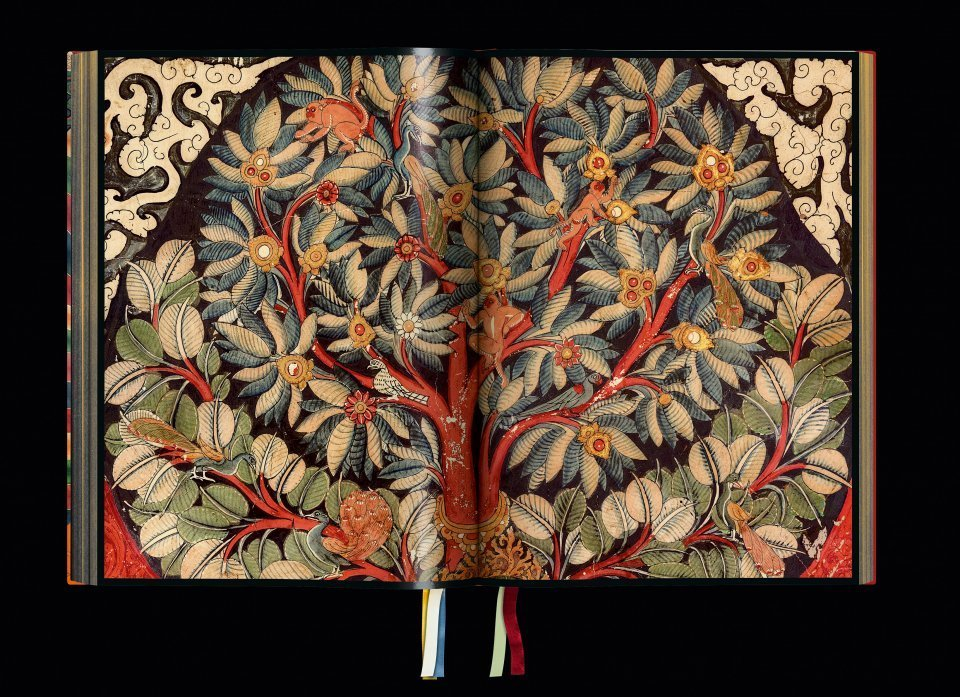

2 Trattazioni buddiste e secolari della compassione
2.1 Sommario
Dopo una prima introduzione che ha sollevato alcuni punti generali, esaminiamo ora in un modo più preciso le definizioni che sono state date al termine “compassione” nei due contesti culturali di riferimento: la tradizione del Buddhismo Mahāyāna e il contesto secolare corrente.

2.2 Etimologie
2.2.1 Etimologie nelle lingue occidentali
Dal latino
- compassiō (sostantivo): sofferenza comune, compassione, corrispondenza, comunanza di sentimenti.
- compatior (verbo): soffrire assieme a un altro, compatire, provare compassione per qualcuno.
La maggior parte delle lingue indoeuropee porta con sé queste connotazioni.
Inoltre, i termini empatia, simpatia, compassione e pietà sono spesso usati come sinonimi, il che sta ad indicare che, nelle lingue occidentali, non è possibile attribuire una definizione univoca al concetto di compassione.
Nella cultura occidentale è importante l’approccio aristotelico. Aristotele definisce la compassione come un’emozione dolorosa che è determinata da
- la gravità percepita della sofferenza – non proviamo compassione per le situazioni che giudichiamo come perdite o dolori insignificanti,
- il presupposto di non essere meritata – si giudica che la persona soffra immeritatamente e non si possa biasimare per aver causato la disgrazia per pigrizia o per un comportamento scorretto,
- la paura di subire un destino simile – possiamo relazionarci a tale sofferenza perché conosciamo una sofferenza simile, o temiamo che una simile disgrazia possa cadere anche su di noi.
Martha Nussbaum, filosofa americana contemporanea, sostituisce il terzo punto di Aristotele con un giudizio eudaimonistico, con il quale intende riconoscere che gli altri, persone e animali, sono elementi significativi del nostro stesso benessere; il loro bene deve essere promosso per realizzare lo scopo della nostra vita. Secondo Nussbaum, la compassione non richiede che ci si senta minacciati dall’idea di potere incontrare una disgrazia simile; la compassione non è quindi legata alla paura. Insieme ad Aristotele, tuttavia, Nussbaum definisce la compassione come un particolare tipo di dolore, “un’emozione dolorosa causata dalla consapevolezza dell’immeritata disgrazia di un’altra persona”.
Tania Singer, neuroscienziata tedesca contemporanea, distingue tra empatia e compassione. Secondo Singer,
- l’empatia si riferisce all’aspetto affettivo di entrare in con la sofferenza dell’altra persona, che porta all’esperienza di angoscia empatica, burnout e stanchezza della compassione,
- la compassione si riferisce alle risposte costruttiviste alla sofferenza che si concentrano sull’alleviare la sofferenza; è un tratto caratteriale più che un’emozione, e una qualità che ci rende umani.
Singer distingue quindi tra l’emozione orientata verso l’altro della compassione e l’emozione orientata verso se stessi del disagio empatico:
A differenza dell’empatia, compassione non significa condividere la sofferenza dell’altro; piuttosto, è caratterizzato da sentimenti di calore, preoccupazione e cura per l’altro, nonché una forte motivazione a migliorare il benessere dell’altro. Compassione è provare e non provare sentimenti per l’altro.
La definizione di compassione di Singer, e la sua distinzione tra empatia e compassione, sono emerse nel campo dello studio neuroscientifico della compassione. C’è un certo sostegno tra gli scienziati della compassione per la reinterpretazione del termine compassione in senso costruttivista e per riservare la parola “simpatia” al significato precedente di “con cui soffrire”.
Tuttavia, l’uso comune della parola “compassione” manifesta ancora un’ambivalenza, se non confusione, sul significato di questo termine. È un sentimento empatico o include anche uno slancio per alleviare attivamente il dolore percepito?
Espandendo la definizione di compassione per comprendere anche il desiderio di agire, o l’azione stessa, le sfaccettature del significato si moltiplicano, poiché la compassione può interagire con altri stati mentali, atteggiamenti, intenzioni ed emozioni, come ad esempio un senso di responsabilità morale nell’aiutare gli altri, la tristezza o la rabbia per l’ingiustizia sociale, le idee politiche su come potrebbe essere una società migliore, o la devozione ad un ideale religioso, solo per citarne alcuni.
Nelle interpretazioni cristiane, la compassione è spesso vista come un obbligo morale che si manifesta nella cura dei poveri, dei malati e degli svantaggiati, e in altre opere di beneficenza. È importante considerare l’influenza di questa dimensione culturale/religiosa sulla formazione alla compassione secolare. Ad esempio, gli interventi sulla coltivazione della compassione sono spesso misurati e valutati nei termini della volontà dei partecipanti di impegnarsi in azioni di beneficenza – mai però dalla loro volontà di impegnarsi in una maggiore pratica di meditazione, il che sarebbe invece un criterio più vicino al buddhismo.
2.2.2 Etimologie buddiste Mahāyāna
Le parole sanscrite che sono state più comunemente tradotte come “compassione” mostrano una multivalenza simile al concetto nelle lingue indoeuropee. I diversi termini associati a compassione, anukampā, kṛpā, karuṇā, sono tutti tradotti come pietà, tenerezza, compassione. Tutti e tre portano un senso di dolorosa empatia e derivano dalla radice verbale di “muoversi, vibrare, tremare”, “con cui simpatizzare”, “piangere, implorare, essere debole o compatire”. Il termine più comune nella letteratura Mahāyāna è karuṇā ed è dotato di una connotazione proattiva. Significa un desiderio di agire, cioè “il desiderio di rimuovere il dolore e la sofferenza”.
Un’interpretazione etimologica alternativa legge karuṇā come un atteggiamento che “impedisce di rimanere a proprio agio”, nel senso che si è a disagio di fronte alla sofferenza degli altri. Questa interpretazione si allinea con il disagio empatico, cioè l’esperienza del disagio quando ci si identifica con il dolore degli altri.
La terminologia tibetana aggiunge una dimensione interessante all’etimologia della compassione. Per tradurre il canone buddista dal sanscrito al tibetano nel VII secolo d.C., fu creato un dizionario standardizzato, il Mahāvyutpatti. Tale dizionario ha determinato, con decreto reale, la traduzione della terminologia buddista della tradizione indiana.
In questo testo, il termine tibetano per karuṇā è un composto di “mente”, “cuore” e “signore, maestà, primo”. In combinazione, questi termini assumno il significato di “signore del cuore” o “la principale qualità della mente”. Inoltre, vi è la connotazione di amore e affetto. È interessante notare, quindi, che i traduttori tibetani hanno scelto di rimuovere l’idea di sofferenza nella loro traduzione e hanno invece posto l’accento su tratti caratteriali di forza e nobiltà. Questo suggerisce che, anche se la compassione inizia a livello di “realtà convenzionale” come uno stato mentale empatico influenzato dalla sofferenza degli altri, tale stato mentale può essere trasformato in una forma perfezionata di compassione.
La scelta dei traduttori Mahāvyutpatti sembra indicare che la compassione viene intesa come la principale qualità della mente e come l’atteggiamento nobile, avanzato e colto dei bodhisattva. Tale modo di intendere la compassione si differenzia dall’idea che la compassione sia semplicemente un’emozione ordinaria, dolorosa, e che può essere esperita da tutti.
La letteratura Mahāyāna distingue tra diversi tipi di compassione, impiegando più comunemente i termini compassione (karuṇā), grande compassione (mahākaruṇā) e compassione incommensurabile (apramāṇakaruṇā). La gamma di significati associati a questi termini esprime l’idea di una progressiva trasformazione della compassione sul sentiero spirituale. Pertanto, facendo affidamento alle fonti tibetane (in particolare sul lavoro di sistematizzazione di Tzongkhapa) è possibile distinguere le forme della compassione nel modo seguente.
L’iniziale compassione ordinaria (karuṇā) può essere definita come un senso di premurosa preoccupazione per una persona cara, come la propria madre, che è più spesso citata nei testi tibetani come l’oggetto che più nel modo più naturale evoca sentimenti amorevoli e premurosi.
Le forme più evolute di compassione sono chiamate grande compassione (mahākaruṇā) e si dividono in due categorie: (i) la mahākaruṇā del bodhisattva, ovvero una compassione universale e imparziale per tutti gli esseri, sostenuta dall’impegno del bodhisattva di salvarli senza eccezioni dalla sofferenza; (ii) lo stato di mahākaruṇā pienamente matura, incondizionata e non referenziale, che è stata coltivata insieme a una comprensione intuitiva della realtà ultima, ovvero della vacuità (śūnyatā).
Infine, l’incommensurabile compassione (apramāṇa karuṇā) emerge dal contesto della contemplazione conosciuta come i quattro “sentimenti infiniti” (catvāri apramāṇa). Sebbene inizialmente designasse un assorbimento meditativo sulla compassione, apramāṇakaruṇā si trasformò in una pratica per generare l’aspirazione alla compassione universale e imparziale per tutti gli esseri.
2.2.2.1 Apramāṇa karuṇā
L’elenco dei quattro “sentimenti infiniti” (apramāṇa) è identico alle quattro “dimore divine” (brahmavihārās): (i) gentilezza amorevole (maitrī), (ii) compassione (karuṇā), (iii) gioia compartecipe (muditā), (iv) equanimità, pio distacco, noncuranza (upekṣā). Quando considerate come oggetti di meditazione ed estese in modo imparziale nella meditazione a tutti gli esseri, allora le dimore divine diventano “sentimenti infiniti” (apramāṇa). Al meditatore viene insegnato ad assumere ciascuno dei “sentimenti infiniti” allo stesso modo: partendo dal primo apramāṇa, per esempio, il meditatore si riempie la mente di gentilezza amorevole e con essa pervade il mondo intero, identificandosi con tutti gli esseri e rimanendo libero da ogni atteggiamento negativo. Allo stesso modo, il meditatore sviluppa compassione, gioia empatica e equanimità.
Il secondo “sentimento infinito” fornisce una definizione di karuṇā, descrivendola come
il desiderio di liberare tutti gli esseri senzienti dalla sofferenza e dalle cause della sofferenza.
Due aspetti sono importanti qui. In primo luogo, la compassione è presentata come un desiderio, senza fare riferimento alla sofferenza empatica. In secondo luogo, il riferimento alle “cause della sofferenza” implica che il meditatore compassionevole è tenuto a fare una diagnosi matura della sofferenza, comprendendola al di là dei sintomi esteriori del dolore.
2.2.2.2 Ālambana
Un altro comune modo di concettualizzare la compassione nelle fonti Mahāyāna è la triplice tipologia della compassione in base al suo oggetto di riferimento. Si distingue
- la compassione per gli esseri come oggetto (sattvālambana karuṇā),
- la compassione per i fenomeni come oggetto (dharmālambana karuṇā), e
- la compassione senza oggetto (anālambana karuṇā) – ālambana significa supporto, fondamento, base, sostegno, causa, ragione.
Questa progressione descrive i tre stadi successivi di compassione che i bodhisattva dovrebbero coltivare, a seconda del loro grado di maturità spirituale. La maturità dei bodhisattva si manifesta nelle capacità cognitive che consentono loro di percepire l’oggetto (ālambana) della compassione in uno dei modi seguenti:
- come creature segnate dalla sofferenza,
- come creature formate dagli skandha impermanenti,
- come creature prive di intrinseca essenza, ma presenti solo relazionalmente e come esito dell’imputazione di essenza donatale della “mente”.
I cinque skandha (o “aggregati”) sono:
- la forma (rupa),
- la sensazione (vedanā),
- la discriminazione/percezione (saṃjñā),
- le formazioni o strutture mentali (saṃskāra),
- la coscienza (vijñāna).
Il primo skandha costituisce il corpo; gli ultimi quattro skandha costituiscono la mente (citta).
In sintesi, il fatto che la compassione comprenda aspetti cognitivi, affettivi e aspirazionali ha prodotto una varietà di definizioni, a volte contraddittorie. Un’importante divergenza nella comprensione del costrutto di compassione risiede nella domanda se esso principalmente si riferisca alla risposta enfatica derivante dalla percezione della sofferenza, all’aspirazione alla cessazione della sofferenza, oppure includa anche l’azione che contribuisce alla cessazione della sofferenza. Oppure, in alternativa, la compassione può essere intesa una combinazione di due o di tutti questi elementi.
Inoltre, se la compassione include una componente comportamentale, si pone la domanda di quale tipo di azione possa essere considerata come una vera azione compassionevole: deve essere un’azione di tipo mentale, verbale, fisico, spirituale, sociale, ecc.?
Un’altra sfida nella comprensione della compassione in ambito Mahāyāna consiste nella caratterizzazione della sofferenza che dovrebbe essere rimossa: è una sofferenza presente, oppure può anche essere una sofferenza potenziale e futura? È una sofferenza fisica? Oppure può anche essere una sofferenza mentale o psicologica?

2.3 Le definizioni della compassione secolare
La complessità della definizione di compassione si riflette nelle varie sfaccettate delle definizioni che sono emerse nel campo della coltivazione secolare alla compassione.
Molti ricercatori hanno proposte varie definizioni di compassione per mettere a punto test psicometrici e per lo sviluppo di programmi standardizzati di coltivazione della compassione. Le definizioni emerse da questi contesti scientifici riflettono l’influenza del pensiero buddista.
Ad esempio, Paul Gilbert ha proposto una definizione di compassione che è intesa come “una sensibilità alla sofferenza in sé e negli altri accompagnata dall’impegno che cerca di alleviarla e prevenirla”. La somiglianza tra questa definizione e quella dei quattro incommensurabili è evidente, data l’inclusione di un elemento costruttivo aspirazionale (ovvero “l’impegno”) e l’attenzione all’eliminazione delle cause della sofferenza (ovvero la “prevenzione”).
I ricercatori contemporanei tendono a proporre definizioni che suddividono il costrutto compassione nelle sue componenti. Ad esempio, nel Manuale dell’istruttore del CCT, Thupten Jinpa identifica quattro dimensioni della compassione, quella cognitiva, affettiva, intenzionale e motivazionale:
We understand compassion to be a multidimensional process, the key components of which are (1) an awareness of suffering in others (cognitive/empathetic), (2) sympathetic concern related to being emotionally moved by suffering (affective), (3) a wish to see the relief of that suffering (intentional), and (4) a responsiveness or readiness to help relieve that suffering (motivational). Thus, we view compassion as a combination of a cognitive perspective and an affective state that gives rise to cooperative and altruistic behavior.
La suddivisione in quattro aspetti evita la riduzione della compassione a un’emozione (dolorosa) e rende possibile l’idea che sia possibile coltivare la compassione (l’obiettivo della CCT). In questi termini diventa possibile potenziare l’aspetto cognitivo, aspirazionale e motivazionale della compassione, senza rafforzare l’elemento affettivo doloroso.
La spiegazione della compassione dell’IM, mentre la descrivono come una risposta naturale con una forte componente emotiva, fanno di tutto per districarla da connotazioni negative o dolorose. Invece, mettono l’accento su qualità positive desiderabili come apertura, preoccupazione per gli altri, sensibilità, non giudizio e tenerezza.
La coltivazione della compassione viene motivata sulla base di due argomenti, vale a dire
- il riconoscimento di un’umanità condivisa e
- il riconoscimento dell’interdipendenza di tutti gli esseri.
Queste due intuizioni sono anche conosciute come “i due pilastri dell’etica secolare”, un termine coniato dal quattordicesimo Dalai Lama, Tenzin Gyatso (Dalai Lama 2011).
Nell’IM, l’argomentazione che motiva la coltivazione della compassione inizia con l’affermazione che la compassione è fondamentalmente parte della natura umana, “un’espressione della nostra facoltà mentale di base del prendersi cura” (Dalai Lama 2011, 8-9), ovvero l’idea che la compassione sia una qualità innata, in contrasto con le teorie che descrivono gli esseri umani come fondamentalmente egoisti e competitivi. Alcune interpretazioni della teoria dell’evoluzione hanno portato a un diffuso scetticismo nei confronti della compassione, poiché il comportamento altruistico può essere visto come “ingenuo”, “irrazionale e possibilmente dannoso per la persona che vi si impegna”. Il Dalai Lama e altri, invece, promuovono un’interpretazione positiva della compassione. Dal punto di vista fenomenologico, inoltre, la realtà esperienziale condivisa di tutti gli esseri umani fornisce la base per rafforzare la naturale preoccupazione di prendersi cura degli altri.
Il secondo argomento che motiva la coltivazione della compassione nell’IM sviluppa l’idea di interconnessione di tutti gli esseri, ovvero la consapevolezza che “il proprio benessere è intimamente interconnesso con il benessere di molti altri”. Questo riconoscimento promuovere un “genuino senso di apprezzamento per gli altri” e conduce a comportamenti altruistici e compassionevoli.
Questi aspetti dell’IM, vale a dire i temi dell’umanità condivisa, dell’interconnessione e della portata universale della compassione, sono di chiara derivazione buddista.
- In primo luogo, l’idea di umanità condivisa, espressa nell’IM come “identificazione con gli altri” e “identità fondamentale di sé e degli altri”, è un’idea sviluppata in tutta la letteratura Mahāyāna, a cominciare dai Prajñāpāramitā Sūtras.
- In secondo luogo, l’interconnessione è espressa come un “senso di connessione”, che è un tema fondamentale nella letteratura Lojong, dove viene espressa l’idea che tutti gli esseri sono stati nostre madri e quindi meritano il nostro rispetto e gratitudine.
- In terzo luogo, la portata universale della compassione che è caratteristica dei trattamenti buddisti della compassione, ad esempio nei famosi “quattro stati incommensurabili”, è qui espressa attraverso l’accenno che “la genuina compassione per gli altri è idealmente, per tutti esseri”.
La stretta somiglianza della definizione di compassione dell’IM con le idee buddiste si riflette anche nella pedagogia della compassione e nella struttura del programma di coltivazione della compassione.
Una differenza rilevante riguarda invece la valutazione del sacrificio di sé. L’IM sottolinea che la compassione “non comporta un sacrificio personale”. Il sacrificio di sé, invece, è apertamente approvato nella letteratura buddista, anche se è qualificato nel Bodhicaryāvatāra di Śāntideva come un comportamento riservato agli stadi avanzati sulla via dei bodhisattva.
Dopo avere presentato questi accenni introduttivi delle etimologie e delle definizioni della compassione, siamo ora pronti per esaminare più nello specifico la trattazione della compassione nella letteratura indiana Mahāyāna.